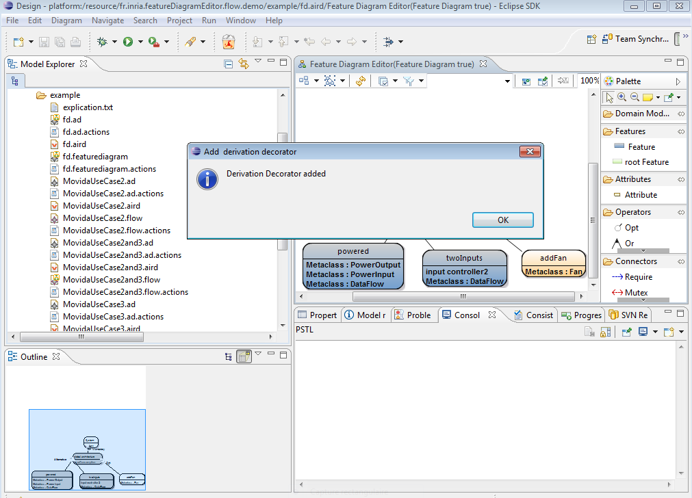

Build date: 17-October-2011
Abstract
This documentation presents the use of a generic decorator in association with a feature diagram editor. This feature diagram editor permit to model variability of a given architecture model (base model) on a variability model (here feature model). In particular, it presents two kind of generic decorator : a base model decorator that decorates Domain Model Elements (elements from base model) referenced by an optional feature and a derivation decorator that decorates domain model elements referenced by unselected features for derivation.These two decorators are added in the base model modeler. This generic decorator tool and feature diagram editor take part of the ANR Project MOVIDA.
Table of Contents
Feature models are a way to add variability on models. By variability, we mean to model common and variable parts of a given architecture. An example of use of variability is given by Software Product Line (SPL) which consists in derive different family of products according to their similarities and differences. Another use is to model different software architecture possible choices. The aim of the Base Model Decorator Engine is adding variability information on the base model modeler by adding a decorator on Domain Model Elements added on an optional feature. So, we have developped a tool that permit to create feature model (cf Feature Diagram Editor Documentation and sample wink video. ), a product derivation tool to derive a given base model according to a given feature model and another tool that permit to use this generic decorator on this Feature Diagram Editor. This document present quickly how to install and use the generic decorator engine for feature diagram editor with a sample wink video. For more information about this editor please refer to the technical documentation.
![[Important]](gfx/admonitions/important.gif) | Generic Decorator engine depends of Feature Diagram Editor and Product Derivation Tool |
|---|---|
Thisgeneric engine constitutes an extension of the Feature Diagram Editor and the Product Derivation Tool. You must have installed the Feature Diagram Editor and the Product Derivation tool before install it. |
The next section will present the installation of the product derivation engine, a quickly presentation of use and a sample wink video.
To install Base Model Decorator Engine you need to select the Feature Diagram Editor category on the Movida Studio update site and all of its dependencies and select Base Model Decorator for Flow Model. In this case, Base Model Decorator Engine is dependant from Feature Diagram Editor.
This chapter present a very quick of use of Generic Decorator Engine. For more information please refer to the sample wink video and the sample wink video of the Feature Diagram Editor. To start with, we present an example of use of the base model and derivation decorators .
To introduce use of generic decorator we can use an example of architecture where a Fan can be optional On this example we introduced variability on an architecture modeled also with Obeo Designer by the following feature model. This example is available on the Eclipse Example File->New-> Example -> Generic Decorator Sample -> Sample .
Global architecture on which we want to add variability

Feature diagram used to model variability on the global architecture
Note that on this feature model a Fan from the base model architecture is added on an optional feature. The next section will present how to use the base model decorator engine to display information about Domain Model Element added on an optional feature on the Domain Modeler.
To enable base model and derivation decorator we need to add a specific layer to the base model layer through two popup menus in the feature modeler. However, these popup menus needs to be activated through the following instructions :
Right click on the session fd.aird -> Viewpoints selection. You obtain the following wizard :
In the feature diagram editor modeler click on the layer icon (outlined in the feature diagram editor picture of the section above) and check Add Derivation Decorator and Add Optional Decorator. Then click on the Feature Diagram element (white part of the feature diagram modeler) -> Derivation Decorator -> Add Derivation Decorator and Optional Decorator -> Add Optional Decorator. You obtain the following in your Eclipse :

| |
The next sections present how to use these enabled decorators.
Now, we want to use the base model decorator to express that this Fan is added on an optional feature directly on the base model graphical view. To do this, you need to activate the layer <viewpoint name > Optional Decorator on Obeo Designer. To do this, click on the icon outlined in red on the following and then check Optional Domain Model Element.
As shown on the following figure an orange square decorator is added on the Fan element.

| Use Refresh |
|---|---|
You need sometimes to use Refresh icon outlined in blue on the figure above. If it does not work, close the Topography diagram and open it again. |
So, you have obtained a way to display variability information on base model.
We suppose we use the Product Derivation Engine to obtain the powered archictecture. So, we use a resolution model on which twoInputs and addFan features are unselected. The derivation decorator permits to add a decorator on Domain Model Elements referenced by an unselected feature.
To add the derivation decorator check whether the resolution model created by the selection engine is on the session and on the layer icon check <viewpoint name> Derivation Decorator.